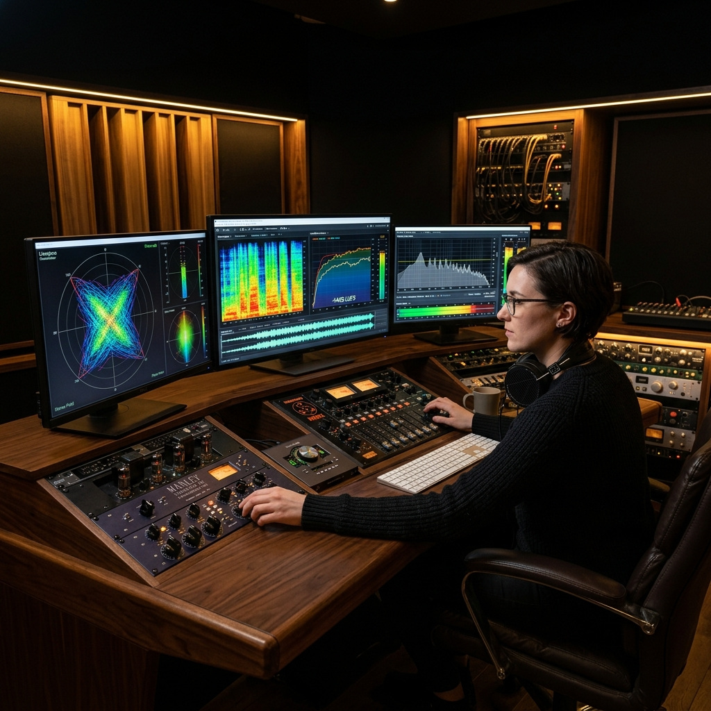

Profile-based mastering
Streaming, Loud, Dynamic, Vocal-focus, R&B/Soul, and Hip Hop options let producers choose intent, not generic flattening.

Final quality is where Lux Studio separates itself. The mastering stage is tuned for practical release outcomes so songs hold up across streaming platforms and real-world playback systems.
Streaming, Loud, Dynamic, Vocal-focus, R&B/Soul, and Hip Hop options let producers choose intent, not generic flattening.
The goal is competitive level without crushing energy. Better transient control keeps movement in drums and vocal articulation.
With cleaner stems, edited arrangement, and voice consistency upstream, mastering results become repeatable and catalog-ready.
